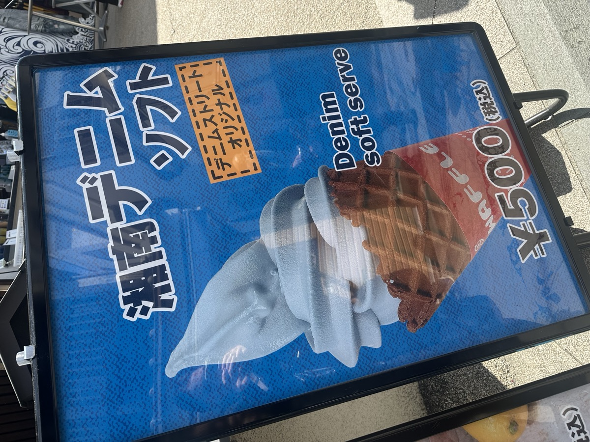

A ¥500 sign and a very blue cone in Enoshima
There is a sign outside a denim shop in Enoshima, a small island an hour south of Tokyo. It advertises a blue soft serve for ¥500. The flavor is, according to the label, denim.
I am certain that in the entire recorded history of customer feedback, nobody has ever said: I wish I could eat a pair of jeans.

Enoshima, Japan. ¥500.
Product development has a well-worn shape. You find the problem. You validate the need. You build the solution. The whole process rests on a belief that demand exists somewhere, latent, waiting to be surfaced and satisfied. Ask the right questions and the product reveals itself.
This framework is good at many things. It is not good at producing denim ice cream.
What happened here was not demand discovery. It was market reading, which is a different skill, and a less celebrated one.
Japan has a food culture that treats novelty as a distinct value. The pleasure is not always in the flavor itself, it is in the moment of surprise, the social currency of telling someone about it, the low-stakes adventure of eating something unexpected. Soft serve here comes in black sesame, in matcha, in cherry blossom, in soy sauce. A blue cone with a denim label is not an act of shock for shock's sake. It is a fluent gesture in an established dialect.
The denim shop read that. They also read something else.
Buying jeans is a considered decision. Nobody leaves home with a vague plan to pop into a jeans shop, unplanned. The barrier to entry is the usual one for clothing: time, intention, the low-grade dread of a fitting room.
But ice cream is a three-second decision. ¥500. A blue cone. A sign on the sidewalk.
They did not try to sell jeans on the street. They sold a moment of delight, and that moment put them in someone's day. Maybe the person walks in. Maybe they just photograph the sign and tell someone about it later. Either way, the store is now in their story. They were in their day, in a way an ad cannot replicate.
The best product thinking I have seen stops asking what users want and starts asking: what is this culture already in love with, and where does our product fit inside that love? The famous misattributed Ford line, "if I had asked people what they wanted, they would have said faster horses," is a warning against literalism in discovery, not against discovery itself. The underlying desire was real. Getting somewhere faster, covering more ground, that was already there. The translation was his.
In Enoshima, the underlying desire was for the small novelty, the thing worth photographing, the ¥500 surprise. The translation was blue.
The cone was, apparently, delicious. I didn't try it. I was too busy writing this down.